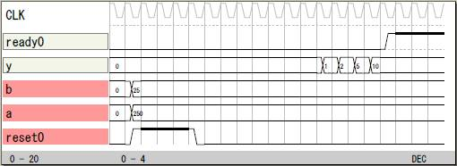
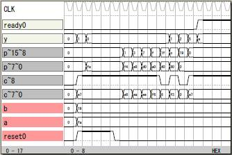

除算器
その1
演算子を使った8ビットの除算器です。
file: sample20

論理譜
logicname yahoo23
entity main
input reset;
input a[8];
input b[8];
output y[8];
output ready;
bitn na[8],nb[8];
na=a;
nb=b;
if (!reset)
y=na/nb;
endif
ready=y.8;
ende
entity sim
output reset;
output a[8];
output b[8];
output y[8];
output ready;
bitr tc[8];
part main(reset,a,b,y,ready)
tc=tc+1;
if (tc<5) reset=1; endif
a=250;
b=25;
ende
endlogic
その2
演算子を使わない除算器です。
8ビット以上の除算をする場合は本論理を拡張して多桁の
除算の論理が作れます。
file: sample21

論理譜
logicname yahoo23
entity main
input reset;
input a[8];
input b[8];
output y[8];
output ready;
bitr p[16];
bitr q[8];
bitn c[9];
bitn np[9];
bitn nb[9];
bitr count[4];
bitn stop;
output T0P[16]; T0P=p;
output T1P[9]; T1P=c;
np.0:7=p.8:15;
nb.0:7=b;
if (reset)
p.0:7=a;
else
if (stop)
p=p;
else
if (c.8)
p.1:15=p.0:14;
else
p.9:15=c.0:6;
p.1:8=p.0:7;
endif
endif
endif
c=np-nb;
if (reset)
q=0;
else
if (stop)
q=q;
else
if (c.8)
q.1:7=q.0:6;
else
q.0=1;
q.1:7=q.0:6;
endif
endif
endif
if (reset)
count=0;
else
if (stop)
count=count;
else
count=count+1;
endif
endif
if (count==9) stop=1; endif
y=q;
ready=stop;
ende
entity sim
output reset;
output a[8];
output b[8];
output y[8];
output ready;
bitr tc[8];
part main(reset,a,b,y,ready)
tc=tc+1;
if (tc<5) reset=1; endif
a=250;
b=25;
ende
endlogic
|